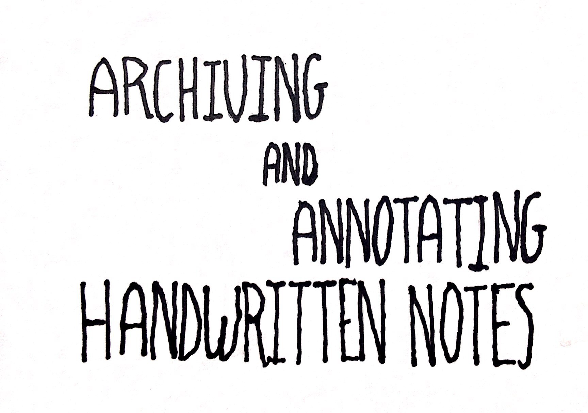
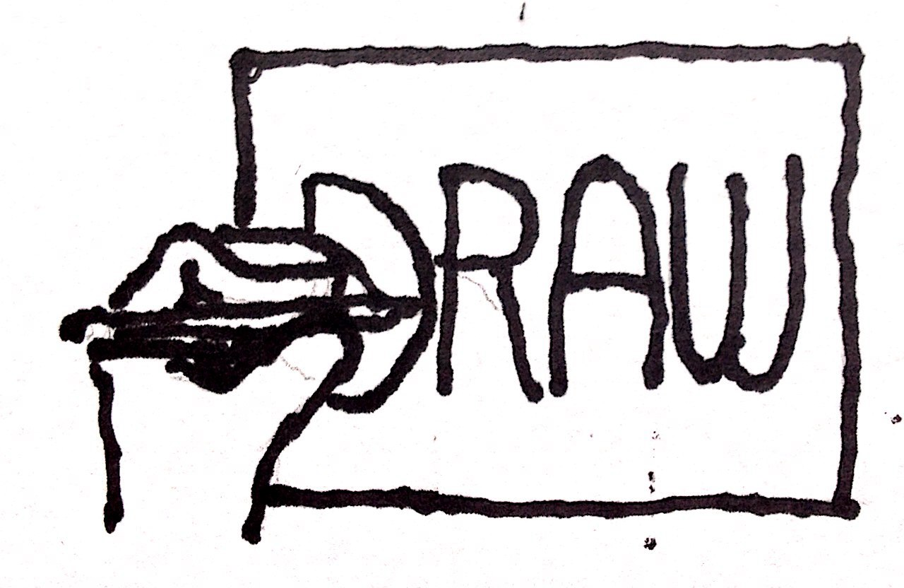
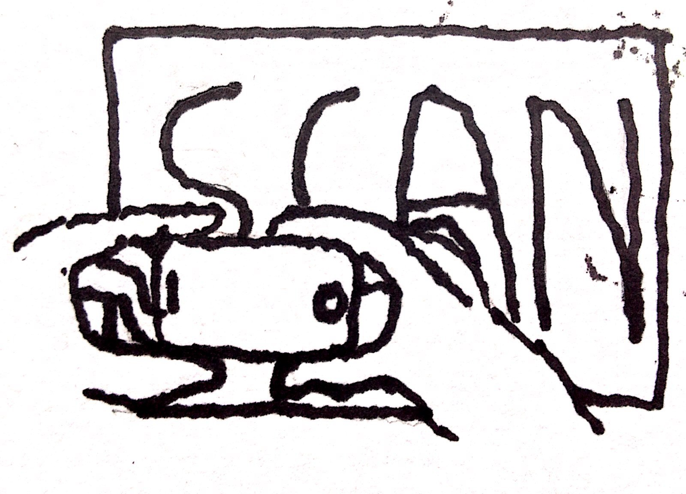

<!DOCTYPE html><html lang="en"></html><head><meta charset="utf-8"><title>Camlistore your handwritten notes</title><meta name="apple-mobile-web-app-capable" content="yes"><meta name="apple-mobile-web-app-status-bar-style" content="black-translucent"><meta name="viewport" content="width=device-width, initial-scale=1.0, maximum-scale=1.0, user-scalable=no"><link rel="stylesheet" href="//cdnjs.cloudflare.com/ajax/libs/reveal.js/3.5.0/css/reveal.min.css"><link id="theme" rel="stylesheet" href="//cdnjs.cloudflare.com/ajax/libs/reveal.js/3.5.0/css/theme/simple.css"><!-- For syntax highlighting --><link rel="stylesheet" href="//cdnjs.cloudflare.com/ajax/libs/reveal.js/3.5.0/lib/css/zenburn.css"><link rel="stylesheet" href="notecards.css"><!-- If the query includes 'print-pdf', use the PDF print sheet --><script>document.write( '<link rel="stylesheet" href="//cdnjs.cloudflare.com/ajax/libs/reveal.js/3.5.0/css/print/' + ( window.location.search.match( /print-pdf/gi ) ? 'pdf' : 'paper' ) + '.css" type="text/css" media="print">' );</script><!--if lt IE 9script(src='//cdnjs.cloudflare.com/ajax/libs/reveal.js/3.5.0/lib/js/html5shiv.js')--><meta name="google-site-verification" content="jdNxQ0D7Pu5Zp7em_fWgy3CMhDdvHL9R5aRt8HuL8KY"><script>var gaProperty = 'UA-342641-5';
if (document.cookie.indexOf("analytics-opt-out" + '=true') == -1) {
  (function(i,s,o,g,r,a,m){i['GoogleAnalyticsObject']=r;i[r]=i[r]||function(){
    (i[r].q=i[r].q||[]).push(arguments)},i[r].l=1*new Date();a=s.createElement(o),
    m=s.getElementsByTagName(o)[0];a.async=1;a.src=g;m.parentNode.insertBefore(a,m)
    })(window,document,'script','//www.google-analytics.com/analytics.js','ga');
    ga('create', gaProperty, 'pdxhub.org');
    ga('require', 'displayfeatures');
    ga('send', 'pageview');
}</script></head><body><div class="reveal"><!--Any section element inside of this container is displayed as a slide --><div class="slides"><section><aside class="notes">I am fully aligned with camlistore's mission to get all your stuff in one archival basket
In particular, I'm interested in archiving and annotating handwritten notes.
Napkins, 3x5s, whiteboard diagrams</aside></section><section><aside class="notes">Often ideas come to us when we aren't at our computers
often, because we're not at our computers
thesis: modalities optimized for capture should have little facility for output</aside></section><section><aside class="notes">Camli excels here: you can capture stuff on the spot, and organize it later
you never know what ideas might turn into something later</aside></section><section><aside class="notes">Camli supports arbitrary metadata for permanodes
*appeal to brad for more info about the way permanodes are indexed*
specifically, can a permanode "wrap" any existing type?</aside></section><section></section></div></div><script src="//cdnjs.cloudflare.com/ajax/libs/reveal.js/3.5.0/lib/js/head.min.js"></script><script src="//cdnjs.cloudflare.com/ajax/libs/reveal.js/3.5.0/js/reveal.min.js"></script><script>var notesFilePath = '/assets/reveal/notes.html'
// Full list of configuration options available here:
// https://github.com/hakimel/reveal.js#configuration
Reveal.initialize({
controls: false,
progress: false,
history: true,
center: true,
notesFilePath: '/assets/reveal/notes.html',
theme: Reveal.getQueryHash().theme, // available themes are in /css/theme
transition: Reveal.getQueryHash().transition || "linear", // default/cube/page/concave/zoom/linear/fade/none
// Parallax scrolling
//- parallaxBackgroundImage: 'https://s3.amazonaws.com/hakim-static/reveal-js/reveal-parallax-1.jpg',
//- parallaxBackgroundSize: '2100px 900px',
// Optional libraries used to extend on reveal.js
dependencies: [
{ src: '//cdnjs.cloudflare.com/ajax/libs/reveal.js/3.5.0/lib/js/classList.js', condition: function() { return !document.body.classList; } },
{ src: '//cdnjs.cloudflare.com/ajax/libs/reveal.js/3.5.0/plugin/highlight/highlight.js', async: true, callback: function() { hljs.initHighlightingOnLoad(); } },
{ src: '//cdnjs.cloudflare.com/ajax/libs/reveal.js/3.5.0/plugin/zoom-js/zoom.js', async: true, condition: function() { return !!document.body.classList; } },
{ src: '/assets/reveal/notes.js', async: true, condition: function() { return !!document.body.classList; } }
]
});</script></body>